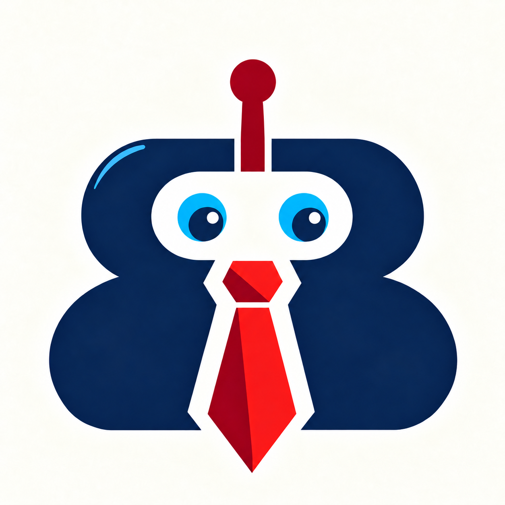
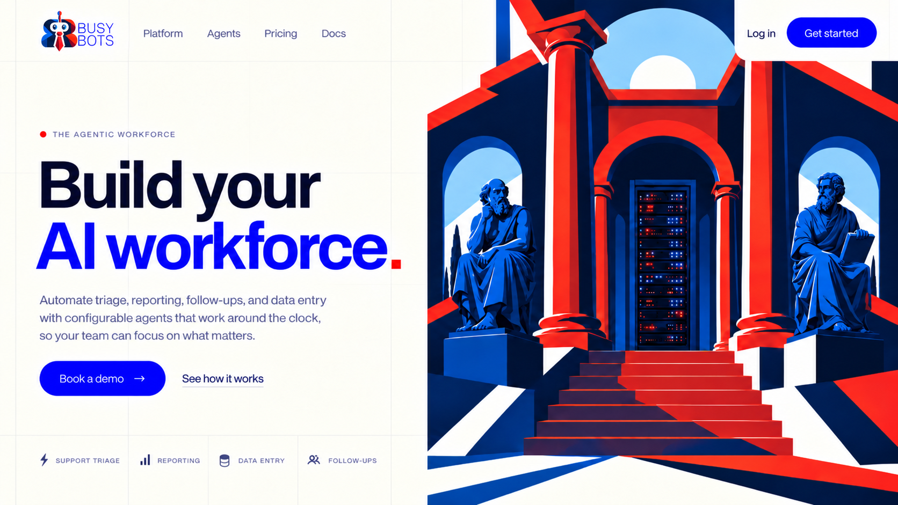
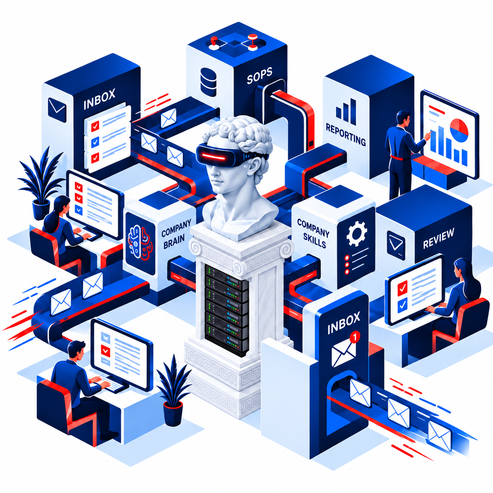

Forward the work
Send a request to your agent’s address. Include the thread, attachments, and a few words about what you need.

BUSYWelcome to the collaborative intelligence.
Leave busy work to BusyBots
Surround yourself or employees with agents in shared channels to exchange ideas, evolve plans, and delegate tasks to agents. Open app in browser, or even easier, send an email with instructions and attachments to get results back from your AI agent.
Send an email to earlyaccess@busybots.net to join our private cohort.

01 / Your collaborative workspace
Give your team a shared view of the work, from the first incoming request to the final reply.
Keep approved policies, product knowledge, and past resolutions available to the agents working on your next request.
Combine support, billing, and legal agents in a sequence that brings their contributions into one cohesive draft.
Follow work on a live task board. Assign owners, inspect delivery history, and pause or resume work as needed.

02 / From request to result
Your customers and vendors keep using email. Your team gets a workspace built for the work behind each reply.
Send a request to your agent’s address. Include the thread, attachments, and a few words about what you need.
The agent draws on company knowledge. Teammates contribute instructions and bring in other specialists.
Review the analysis, resolve open questions, and refine the proposed response in the shared discussion.
With review enabled, an authorized teammate approves the draft before it goes back to the customer.
04 / The next layer of operations
On the roadmapExecutable SOPs will turn the rules in your training manuals into defined steps, checks, and handoffs.
Let agents handle analysis and drafting within a prescribed process. Keep the order of operations, approval requirements, and external actions under workflow control.
Define the action, the quality requirements, and why the step matters, using structured job breakdowns.
Build in read-do and do-confirm checklists for the moments that need deliberate verification.
Version your procedures, track handoffs, and identify where work waits so you can refine the next release.
05 / Put it to work
Five workflow examples to explore with your team. Integrations and approval steps are configured for your process.
THE REQUEST“Compare this invoice with PO #1128 and flag discrepancies before we approve it.”
Extract line items, compare them with agreed terms, and prepare a clarification request. Finance reviews the evidence and decides the next step.
THE REQUEST“Help this customer expand their plan, check their discount, and include our approved data terms.”
Support contributes setup instructions, billing adds contracted pricing, and legal contributes approved language. The account lead reviews one combined response.
THE REQUEST“Prepare answers to this RFP from our knowledge base and flag questions we still need to resolve.”
Match questions to approved company material and build a draft proposal. The sales team handles missing information and makes the final pricing decisions.
THE REQUEST“This shipment is delayed. Summarize the affected orders and prepare options for the account manager.”
Gather context, compare available options, and draft a customer update. Your operations lead decides how to respond; external actions depend on the configured integration.
THE REQUEST“At 7:30 each morning, summarize priority threads, outstanding approvals, and stalled work.”
Scheduled agents prepare an internal digest under an authorized team member’s identity. Start the day with a focused list of items that need attention.
06 / Why BusyBots
| Starting point | Typical team challenge | The BusyBots approach |
|---|---|---|
| Individual AI chats | Moving useful answers and context from private conversations into team work. | Shared threads where teammates and specialized agents collaborate. |
| Open-ended agent loops | Keeping oversight of decisions, handoffs, and outbound communication. | Visible tasks, bounded runs, and configurable human review. |
| Rule-based automation | Handling unstructured requests that require interpretation or a considered response. | Agents analyze and draft; people resolve the judgment calls. |
07 / Security & governance
Manage who can participate, what needs review, and how work changes hands.
Owner, Admin, and Member roles separate responsibilities. Channel access rules control who can participate.
Local checks, spam scoring integrations, and pre-execution classification help identify suspicious messages before agent processing.
Thread limits, hop limits, cycle detection, and auto-reply suppression help contain runaway conversations.
Review active schedules, assigned tasks, and open handoffs when a teammate leaves, so responsibilities can be reassigned.
Use your provider accounts, with versioned AES-256-GCM key encryption. Keep your provider relationship and negotiated rates.
Inspect outgoing email statuses, retry history, and task progress to understand what happened and what needs attention.
08 / Early access pricing
Start on your own infrastructure, bring your team into the cloud, or talk with us about a private deployment.
Free
During the early access rollout
$24 / seat / month
Billed annually · $288 per seat / year
Let’s talk
Custom annual agreement
Seats are for internal teammates; external customers and vendors don’t count as seats. AI usage is billed separately by your chosen provider. Confirm availability and deployment scope with us during early access.
No. External customers and vendors interact through ordinary email, including existing threads and attachments. Your internal team uses the workspace to manage the work behind the reply.
Yes. Your team can keep its current email setup. We recommend using a separate domain for agent/bot email addresses, so it’s clear which messages come from people and which come from agents. We can help configure this separation during onboarding.
A thread can be handed to a teammate in “Needs Instruction” status. The teammate provides context, requests a draft, and reviews the result before dispatch when review is enabled.
Yes. Ollama is supported alongside hosted model providers. The appropriate model and deployment depend on your workload and infrastructure.
Native, bi-directional Slack integration is on the roadmap. Start with email and the browser workspace today.
Send your company name, team size, the first workflow you want to automate, and your current email or helpdesk setup. We’ll use that to plan onboarding and workflow configuration with you.
Your next chapter starts with a team of busy agents
Tell us which recurring task takes up too much of your day. Let’s make it your first BusyBots workflow.